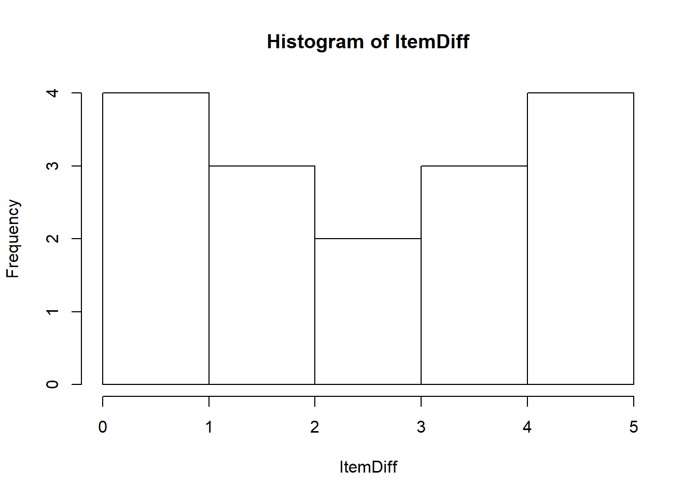
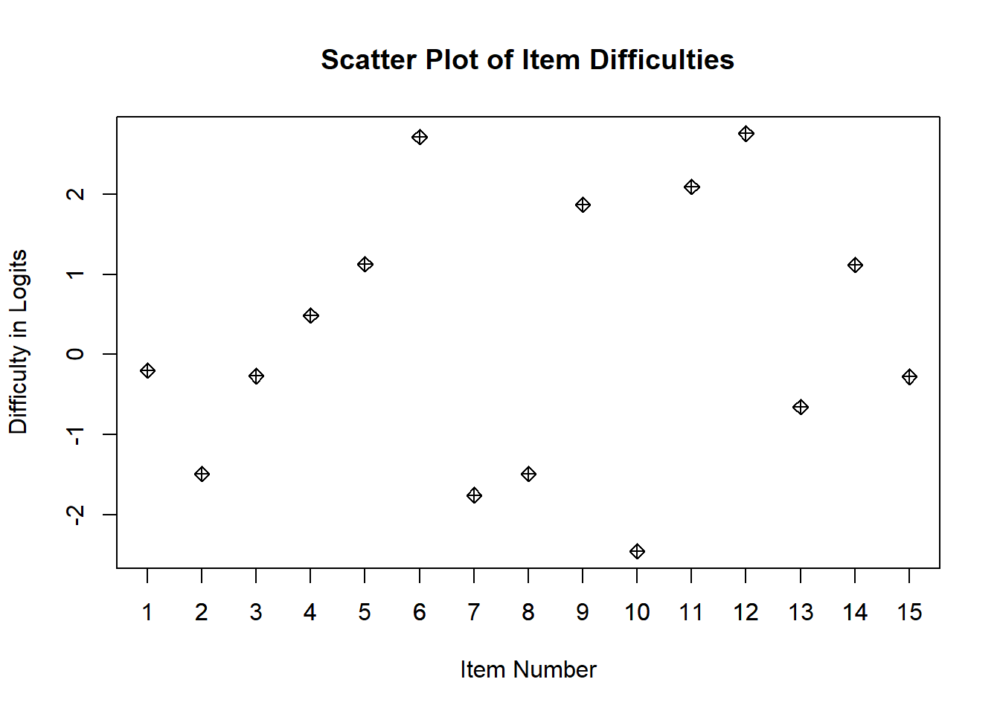
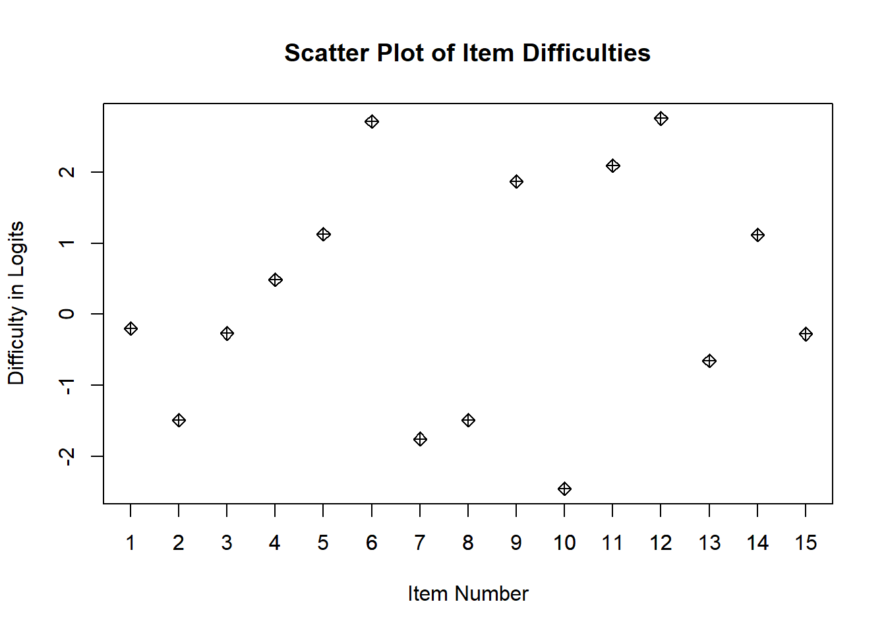
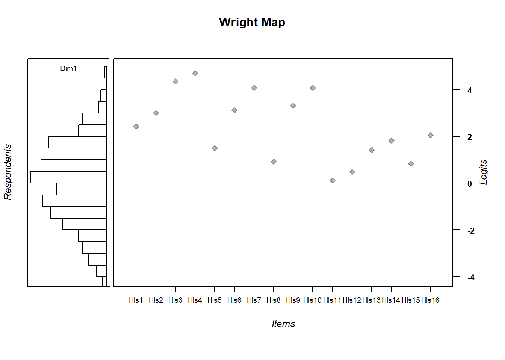
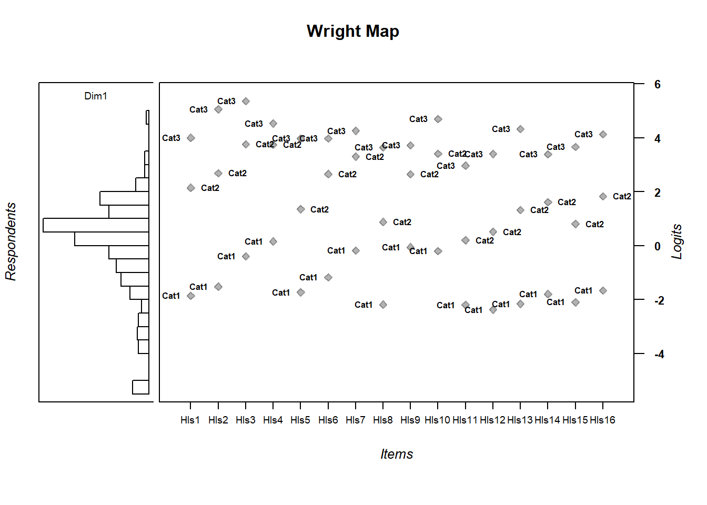

Chapter 4 The Rasch Model
4.1 Basics
- Running the Rasch model via TAM estimates the model:
\(Pr(X_i=1|\theta_s, \delta_i) = \frac{exp(\theta_s-\delta_i)}{1+exp(\theta_s-\delta_i)}\).
Here, \(\theta_s\) denotes the estimated ability level of student s, \(\delta_i\) is the estimated difficulty level of item i and both estimates are in logits. \(Pr(X=1|\theta_s, \delta_i)\) can be read as the probability of a “correct response” or of a respondent endorsing the “higher” category (if the item is scored dichotomously) for a item i given a student’s ability and item i's difficulty.
TAM will provide estimates for item difficulty and student ability along with a host of other data.
Item difficulties are defined as the point at which a person has a 50% chance of getting an item correct, defined in logits (log of the odds). So, if for an item a person of ability 0 logits has a 50% chance of getting a item correct, that item’s difficulty is defined as 0 logits.
See the figure below for a visualization of this.

4.2 Packages Necessary for running the Rasch model
Install the packages below. TAM is a collection of functions to run a variety of Rasch-type models. WrightMap will help us visualize model estimated item difficulties and model estimated person abilities. We can use the Wright map to help us answer questions such as, “do our items match our population of interest such that we have items that garner information about students at all ranges of the ability distribution?” or “do we have too many easy or hard items and not enough items in the middle of the ability range (are the items well targeted)?” Let’s get into it.
If you need to install TAM or the WrightMap package, note the quotes and capitalizations:
install.packages("TAM")
install.packages("WrightMap")We need to load the packages.Additionally, we’ll use some packages from the tidyverse
library(TAM)
library(WrightMap)
library(tidyverse)4.3 Reading in Data
The data for this session will be downloaded from an online repository (github). We need to read it in to your R session. This means that it is something you can now work with in R. The .csv file will be read in as something called a data frame or (dataframe). This is a type of object in R that’s essentially a spreadsheet that your’re used to working with.
hls <- read_csv("https://raw.githubusercontent.com/danielbkatz/DBER_Rasch/master/data/dichotomous.csv")## Warning: Missing column names filled in: 'X1' [1]## Parsed with column specification:
## cols(
## X1 = col_double(),
## V1 = col_double(),
## V2 = col_double(),
## V3 = col_double(),
## V4 = col_double(),
## V5 = col_double(),
## V6 = col_double(),
## V7 = col_double(),
## V8 = col_double(),
## V9 = col_double(),
## V10 = col_double(),
## V11 = col_double(),
## V12 = col_double(),
## V13 = col_double(),
## V14 = col_double(),
## V15 = col_double()
## )# The first column are IDs that we'll get rid of
hls <- hls[-1]If you would like to download the data first, and are reading it in locally,
hls <- read.csv("data/hls_dic_scale.csv")4.4 Check out the data set
Let’s explore hls just a little. It has 15 columns (the items, and 1000 rows, the people). Each item is titled “V1…vN.” There is no missing data.
dim(hls)## [1] 1000 15str(hls)## tibble [1,000 x 15] (S3: tbl_df/tbl/data.frame)
## $ V1 : num [1:1000] 0 0 0 0 1 0 0 0 0 1 ...
## $ V2 : num [1:1000] 0 0 0 0 0 0 0 1 0 0 ...
## $ V3 : num [1:1000] 0 0 0 0 0 0 1 1 1 0 ...
## $ V4 : num [1:1000] 0 0 1 0 1 0 0 0 0 1 ...
## $ V5 : num [1:1000] 0 0 0 0 1 0 0 0 0 0 ...
## $ V6 : num [1:1000] 1 1 1 1 1 0 1 0 1 1 ...
## $ V7 : num [1:1000] 1 1 1 0 1 1 0 1 0 1 ...
## $ V8 : num [1:1000] 1 1 1 0 1 1 1 0 0 1 ...
## $ V9 : num [1:1000] 1 0 1 0 0 1 1 0 0 1 ...
## $ V10: num [1:1000] 1 1 1 1 1 1 1 1 1 1 ...
## $ V11: num [1:1000] 0 0 0 0 1 0 1 0 0 0 ...
## $ V12: num [1:1000] 1 1 1 0 1 0 1 0 1 1 ...
## $ V13: num [1:1000] 1 1 1 1 1 1 1 1 1 1 ...
## $ V14: num [1:1000] 1 1 1 1 1 1 1 0 0 0 ...
## $ V15: num [1:1000] 1 1 1 1 1 0 1 0 0 1 ...head(hls)## # A tibble: 6 x 15
## V1 V2 V3 V4 V5 V6 V7 V8 V9
## <dbl> <dbl> <dbl> <dbl> <dbl> <dbl> <dbl> <dbl> <dbl>
## 1 0 0 0 0 0 1 1 1 1
## 2 0 0 0 0 0 1 1 1 0
## 3 0 0 0 1 0 1 1 1 1
## 4 0 0 0 0 0 1 0 0 0
## 5 1 0 0 1 1 1 1 1 0
## 6 0 0 0 0 0 0 1 1 1
## # ... with 6 more variables: V10 <dbl>, V11 <dbl>,
## # V12 <dbl>, V13 <dbl>, V14 <dbl>, V15 <dbl>If you want to see the whole dataset, view the data frame:
View(hls)4.5 Running the Rasch model
This command runs a Rasch model on the selected data frame. Here, mod1 is an object in R that “holds” the data from our Rasch model (along with a lot of other information). It’s essentially a large list. This is the main computation step, now we just select information that is stored in mod1 or run mod1 through further computation.
Note that the dataframe hls has to contain only items and no other information.
mod1 <- tam(hls)## ....................................................
## Processing Data 2021-02-07 11:35:45
## * Response Data: 1000 Persons and 15 Items
## * Numerical integration with 21 nodes
## * Created Design Matrices ( 2021-02-07 11:35:45 )
## * Calculated Sufficient Statistics ( 2021-02-07 11:35:45 )
## ....................................................
## Iteration 1 2021-02-07 11:35:45
## E Step
## M Step Intercepts |----
## Deviance = 14773.234
## Maximum item intercept parameter change: 0.399105
## Maximum item slope parameter change: 0
## Maximum regression parameter change: 0
## Maximum variance parameter change: 0.078497
## ....................................................
## Iteration 2 2021-02-07 11:35:45
## E Step
## M Step Intercepts |---
## Deviance = 14690.1844 | Absolute change: 83.0496 | Relative change: 0.00565341
## Maximum item intercept parameter change: 0.021879
## Maximum item slope parameter change: 0
## Maximum regression parameter change: 0
## Maximum variance parameter change: 0.033763
## ....................................................
## Iteration 3 2021-02-07 11:35:45
## E Step
## M Step Intercepts |--
## Deviance = 14688.5292 | Absolute change: 1.6552 | Relative change: 0.00011269
## Maximum item intercept parameter change: 0.014713
## Maximum item slope parameter change: 0
## Maximum regression parameter change: 0
## Maximum variance parameter change: 0.023636
## ....................................................
## Iteration 4 2021-02-07 11:35:45
## E Step
## M Step Intercepts |--
## Deviance = 14687.7687 | Absolute change: 0.7605 | Relative change: 5.177e-05
## Maximum item intercept parameter change: 0.010151
## Maximum item slope parameter change: 0
## Maximum regression parameter change: 0
## Maximum variance parameter change: 0.016163
## ....................................................
## Iteration 5 2021-02-07 11:35:45
## E Step
## M Step Intercepts |--
## Deviance = 14687.4204 | Absolute change: 0.3483 | Relative change: 2.372e-05
## Maximum item intercept parameter change: 0.007002
## Maximum item slope parameter change: 0
## Maximum regression parameter change: 0
## Maximum variance parameter change: 0.01092
## ....................................................
## Iteration 6 2021-02-07 11:35:45
## E Step
## M Step Intercepts |--
## Deviance = 14687.2608 | Absolute change: 0.1595 | Relative change: 1.086e-05
## Maximum item intercept parameter change: 0.004829
## Maximum item slope parameter change: 0
## Maximum regression parameter change: 0
## Maximum variance parameter change: 0.007322
## ....................................................
## Iteration 7 2021-02-07 11:35:45
## E Step
## M Step Intercepts |--
## Deviance = 14687.1876 | Absolute change: 0.0733 | Relative change: 4.99e-06
## Maximum item intercept parameter change: 0.003331
## Maximum item slope parameter change: 0
## Maximum regression parameter change: 0
## Maximum variance parameter change: 0.004888
## ....................................................
## Iteration 8 2021-02-07 11:35:45
## E Step
## M Step Intercepts |--
## Deviance = 14687.1538 | Absolute change: 0.0338 | Relative change: 2.3e-06
## Maximum item intercept parameter change: 0.0023
## Maximum item slope parameter change: 0
## Maximum regression parameter change: 0
## Maximum variance parameter change: 0.003254
## ....................................................
## Iteration 9 2021-02-07 11:35:45
## E Step
## M Step Intercepts |--
## Deviance = 14687.1382 | Absolute change: 0.0156 | Relative change: 1.06e-06
## Maximum item intercept parameter change: 0.001589
## Maximum item slope parameter change: 0
## Maximum regression parameter change: 0
## Maximum variance parameter change: 0.002164
## ....................................................
## Iteration 10 2021-02-07 11:35:45
## E Step
## M Step Intercepts |--
## Deviance = 14687.1309 | Absolute change: 0.0073 | Relative change: 5e-07
## Maximum item intercept parameter change: 0.001098
## Maximum item slope parameter change: 0
## Maximum regression parameter change: 0
## Maximum variance parameter change: 0.001439
## ....................................................
## Iteration 11 2021-02-07 11:35:45
## E Step
## M Step Intercepts |--
## Deviance = 14687.1275 | Absolute change: 0.0034 | Relative change: 2.3e-07
## Maximum item intercept parameter change: 0.00076
## Maximum item slope parameter change: 0
## Maximum regression parameter change: 0
## Maximum variance parameter change: 0.000957
## ....................................................
## Iteration 12 2021-02-07 11:35:45
## E Step
## M Step Intercepts |--
## Deviance = 14687.1259 | Absolute change: 0.0016 | Relative change: 1.1e-07
## Maximum item intercept parameter change: 0.000526
## Maximum item slope parameter change: 0
## Maximum regression parameter change: 0
## Maximum variance parameter change: 0.000637
## ....................................................
## Iteration 13 2021-02-07 11:35:45
## E Step
## M Step Intercepts |--
## Deviance = 14687.1251 | Absolute change: 8e-04 | Relative change: 5e-08
## Maximum item intercept parameter change: 0.000365
## Maximum item slope parameter change: 0
## Maximum regression parameter change: 0
## Maximum variance parameter change: 0.000425
## ....................................................
## Iteration 14 2021-02-07 11:35:45
## E Step
## M Step Intercepts |--
## Deviance = 14687.1248 | Absolute change: 4e-04 | Relative change: 2e-08
## Maximum item intercept parameter change: 0.000253
## Maximum item slope parameter change: 0
## Maximum regression parameter change: 0
## Maximum variance parameter change: 0.000284
## ....................................................
## Iteration 15 2021-02-07 11:35:45
## E Step
## M Step Intercepts |--
## Deviance = 14687.1246 | Absolute change: 2e-04 | Relative change: 1e-08
## Maximum item intercept parameter change: 0.000176
## Maximum item slope parameter change: 0
## Maximum regression parameter change: 0
## Maximum variance parameter change: 0.00019
## ....................................................
## Iteration 16 2021-02-07 11:35:45
## E Step
## M Step Intercepts |--
## Deviance = 14687.1245 | Absolute change: 1e-04 | Relative change: 1e-08
## Maximum item intercept parameter change: 0.000122
## Maximum item slope parameter change: 0
## Maximum regression parameter change: 0
## Maximum variance parameter change: 0.000127
## ....................................................
## Iteration 17 2021-02-07 11:35:45
## E Step
## M Step Intercepts |-
## Deviance = 14687.1245 | Absolute change: 0 | Relative change: 0
## Maximum item intercept parameter change: 8.5e-05
## Maximum item slope parameter change: 0
## Maximum regression parameter change: 0
## Maximum variance parameter change: 8.5e-05
## ....................................................
## Item Parameters
## xsi.index xsi.label est
## 1 1 V1 1.7931
## 2 2 V2 2.9362
## 3 3 V3 1.8480
## 4 4 V4 1.9376
## 5 5 V5 1.1392
## 6 6 V6 -0.3249
## 7 7 V7 0.2917
## 8 8 V8 0.1005
## 9 9 V9 0.3164
## 10 10 V10 -2.7690
## 11 11 V11 2.3171
## 12 12 V12 -1.3863
## 13 13 V13 -3.1003
## 14 14 V14 -0.5554
## 15 15 V15 -0.2020
## ...................................
## Regression Coefficients
## [,1]
## [1,] 0
##
## Variance:
## [,1]
## [1,] 1.028
##
##
## EAP Reliability:
## [1] 0.691
##
## -----------------------------
## Start: 2021-02-07 11:35:45
## End: 2021-02-07 11:35:45
## Time difference of 0.08599401 secsIf we want to see some basic results from mod1, we can use summary
summary(mod1)## ------------------------------------------------------------
## TAM 3.5-19 (2020-05-05 22:45:39)
## R version 3.6.0 (2019-04-26) x86_64, mingw32 | nodename=LAPTOP-K7402PLE | login=katzd
##
## Date of Analysis: 2021-02-07 11:35:45
## Time difference of 0.08599401 secs
## Computation time: 0.08599401
##
## Multidimensional Item Response Model in TAM
##
## IRT Model: 1PL
## Call:
## tam.mml(resp = resp)
##
## ------------------------------------------------------------
## Number of iterations = 17
## Numeric integration with 21 integration points
##
## Deviance = 14687.12
## Log likelihood = -7343.56
## Number of persons = 1000
## Number of persons used = 1000
## Number of items = 15
## Number of estimated parameters = 16
## Item threshold parameters = 15
## Item slope parameters = 0
## Regression parameters = 0
## Variance/covariance parameters = 1
##
## AIC = 14719 | penalty=32 | AIC=-2*LL + 2*p
## AIC3 = 14735 | penalty=48 | AIC3=-2*LL + 3*p
## BIC = 14798 | penalty=110.52 | BIC=-2*LL + log(n)*p
## aBIC = 14747 | penalty=59.64 | aBIC=-2*LL + log((n-2)/24)*p (adjusted BIC)
## CAIC = 14814 | penalty=126.52 | CAIC=-2*LL + [log(n)+1]*p (consistent AIC)
## AICc = 14720 | penalty=32.55 | AICc=-2*LL + 2*p + 2*p*(p+1)/(n-p-1) (bias corrected AIC)
## GHP = 0.49064 | GHP=( -LL + p ) / (#Persons * #Items) (Gilula-Haberman log penalty)
##
## ------------------------------------------------------------
## EAP Reliability
## [1] 0.691
## ------------------------------------------------------------
## Covariances and Variances
## [,1]
## [1,] 1.028
## ------------------------------------------------------------
## Correlations and Standard Deviations (in the diagonal)
## [,1]
## [1,] 1.014
## ------------------------------------------------------------
## Regression Coefficients
## [,1]
## [1,] 0
## ------------------------------------------------------------
## Item Parameters -A*Xsi
## item N M xsi.item AXsi_.Cat1 B.Cat1.Dim1
## 1 V1 1000 0.182 1.793 1.793 1
## 2 V2 1000 0.074 2.936 2.936 1
## 3 V3 1000 0.175 1.848 1.848 1
## 4 V4 1000 0.164 1.938 1.938 1
## 5 V5 1000 0.280 1.139 1.139 1
## 6 V6 1000 0.566 -0.325 -0.325 1
## 7 V7 1000 0.440 0.292 0.292 1
## 8 V8 1000 0.479 0.100 0.100 1
## 9 V9 1000 0.435 0.316 0.316 1
## 10 V10 1000 0.915 -2.769 -2.769 1
## 11 V11 1000 0.123 2.317 2.317 1
## 12 V12 1000 0.760 -1.386 -1.386 1
## 13 V13 1000 0.936 -3.100 -3.100 1
## 14 V14 1000 0.612 -0.555 -0.555 1
## 15 V15 1000 0.541 -0.202 -0.202 1
##
## Item Parameters in IRT parameterization
## item alpha beta
## 1 V1 1 1.793
## 2 V2 1 2.936
## 3 V3 1 1.848
## 4 V4 1 1.938
## 5 V5 1 1.139
## 6 V6 1 -0.325
## 7 V7 1 0.292
## 8 V8 1 0.100
## 9 V9 1 0.316
## 10 V10 1 -2.769
## 11 V11 1 2.317
## 12 V12 1 -1.386
## 13 V13 1 -3.100
## 14 V14 1 -0.555
## 15 V15 1 -0.2024.6 Item Difficulties
We’ll extract difficulties (xsi) from the mod1 object (mod1 is like a large list, and we can index it like we do with vectors, dataframes, etc). List objects can be indexed with double brackets (i.e. to get the first object in a list called list, then we can go with: list[[1]] or by name, list[["name"]] or list name). List objects can be vectors, dataframes, arrays, or another list (among other things). In TAM, the mod1 object created involves all of these things.
We’ll access item difficulties via indexing with the $. In other words, access mod1 and extract the object xsi which exists in mod1 as a datframe.
Assign those values to an object in the environment called diffic using <-, the assignment operator, like before
diffic <- mod1$xsidiffic## xsi se.xsi
## V1 1.7931307 0.08796069
## V2 2.9362293 0.12572913
## V3 1.8480436 0.08918914
## V4 1.9375978 0.09130044
## V5 1.1392412 0.07679369
## V6 -0.3249306 0.07031216
## V7 0.2917034 0.07025640
## V8 0.1004752 0.06985392
## V9 0.3164109 0.07033607
## V10 -2.7690071 0.11837091
## V11 2.3171095 0.10185622
## V12 -1.3863076 0.08015772
## V13 -3.1003020 0.13381930
## V14 -0.5553981 0.07135170
## V15 -0.2019536 0.06998711In the table below, we can see the item difficulties in logits in the column xsi and the standard error for each item se.xsi. One way to think of what the standard error tells us is whether item difficulties may overlap or not.
xsi values indicate more difficult items. For instance, item Hls9 is harder than Hls8. The values are identified by constraining the mean of item difficulties to zero.
| xsi | se.xsi | |
|---|---|---|
| V1 | 1.7931307 | 0.0879607 |
| V2 | 2.9362293 | 0.1257291 |
| V3 | 1.8480436 | 0.0891891 |
| V4 | 1.9375978 | 0.0913004 |
| V5 | 1.1392412 | 0.0767937 |
| V6 | -0.3249306 | 0.0703122 |
| V7 | 0.2917034 | 0.0702564 |
| V8 | 0.1004752 | 0.0698539 |
| V9 | 0.3164109 | 0.0703361 |
| V10 | -2.7690071 | 0.1183709 |
| V11 | 2.3171095 | 0.1018562 |
| V12 | -1.3863076 | 0.0801577 |
| V13 | -3.1003020 | 0.1338193 |
| V14 | -0.5553981 | 0.0713517 |
| V15 | -0.2019536 | 0.0699871 |
4.7 Visualize - Get Item Characteristic Curves
We may want to visualize each item characteristic curve (ICC) for each item. These plots plot the expected value (blue, smooth line) given that the data fits the Rasch model, and the observed black line (a binned solution). Each plot represents a single item. They visualize the probability of a respondent getting the item correct given their ability level. For instance, for item V1, the blue line shows that a person at 1 logit (x-axis) has something like a 30% probability of getting the item correct (predicted).
plot(mod1)## Iteration in WLE/MLE estimation 1 | Maximal change 1.2824
## Iteration in WLE/MLE estimation 2 | Maximal change 0.2808
## Iteration in WLE/MLE estimation 3 | Maximal change 0.01
## Iteration in WLE/MLE estimation 4 | Maximal change 0.0012
## Iteration in WLE/MLE estimation 5 | Maximal change 1e-04
## Iteration in WLE/MLE estimation 6 | Maximal change 0
## ----
## WLE Reliability= 0.666 



## ....................................................
## Plots exported in png format into folder:
## C:/Users/katzd/Desktop/Rprojects/Rasch_BIOME/DBER_Rasch-data/PlotsNote that for items V1 and V2, the black line, the observed probabilities, deviate quite a lot from the blue lines, the expected probabilities. Contrast this with item V5. For item V1, the black line seems to be steeper than the blue line, whereas for V2, the black line is quite a bit shallower. These lines hint at different types of item misfit, which we’ll introduce later. Roughly, in the shallower case, we’re not able to differentiate between respondents very easily - it probably means there is too much randomness. In the steep case, it might be too easy to differentiate - the item isn’t informative.
4.8 Summarizing the distribution of difficulties
We can visualize and summarize the distribution of item difficulties below, but there will be a better way, called a Wright Map, that we’ll introduce later.
The methods below use no packages to visualize and summarize.
hist(diffic$xsi, breaks=10)
# If you want to see the items as a scatter plot
plot(diffic$xsi, main="Scatter Plot of Item Difficulties", xlab="Item Number", ylab = "Difficulty in Logits", pch=9)
axis(side=1, at = c(1:15))
Let’s make that difficulty plot look a bit nicer - but we can’t really
# create a histogram to get a sense - since we only have 15 items, it's not that useful
ggplot(diffic, aes(x = xsi)) +
geom_histogram(bins=15) +
ggtitle("Distribution of Item Difficulties")
What might be more useful is looking at item difficulties vs their standard errors. Luckily, in this dataset, items were ordered from easiest to hardest. We see that items with larger standard errors are the hard items and the easiest items. This is because we have fewer students in the tails of the distribution - thus less information for each item - hence larger standard errors.
We’ll get into this more later!
ggplot(diffic, aes(x = xsi, y=se.xsi)) + geom_point() +
ggtitle("Item difficulties and their standard error") +
xlab("Estimated Item Difficulties") +
ylab("Estimated Item Standard Errors")
Another way we can get an idea of dispersion - the empirical item means and standard deviations.
mean(diffic$xsi)## [1] 0.2894695sd(diffic$xsi)## [1] 1.7781924.8.1 Exercise:
- Which item is the hardest? The easiest?
- Which item has the lowest standard error - what is it’s difficulty - don’t use the plot.